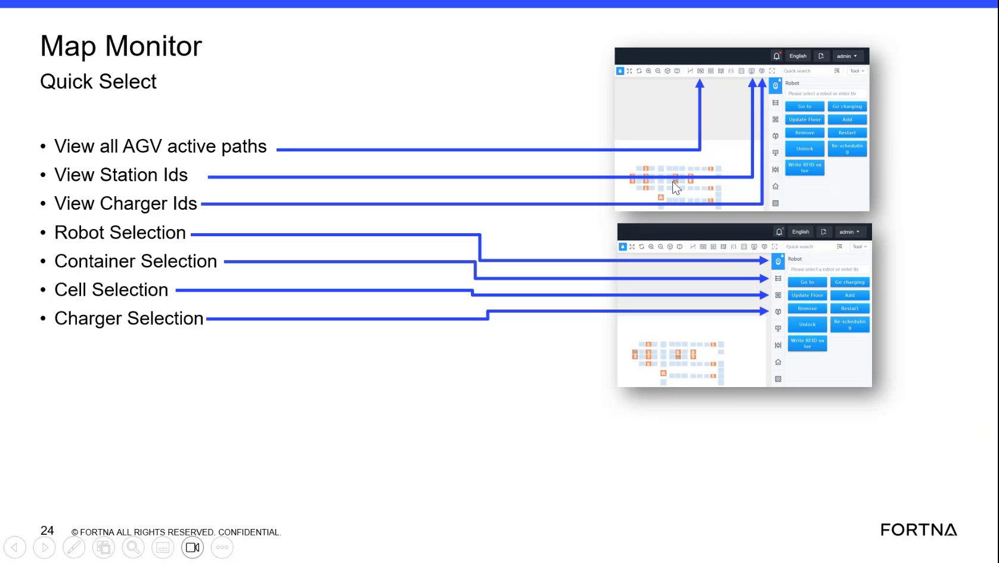

| Procedure ID | proc_send_an_agv_that_is_not_in_a_task_to_a_selected_map_square_using_go_to_v1 |
|---|---|
| Title | Send An AGV That Is Not In A Task To A Selected Map Square Using Go To |
| Procedure Type | operation |
| Primary Role | operator |
| Support Safe | Yes |
| Validation Status | needs_sme_review |
| Merge Status | source_finalized |
Use the Robot Selection Go-to function in the OptiSweep map view to send an AGV that is not currently in a task to a selected square. The source emphasizes that the user must select an AGV object first; clicking the map background alone does not perform an action.
Use this procedure when an operator needs to reposition an AGV on the map using the Go to function and the AGV is not in a task.
Responsible role: operator
Instruction:
On the map, select the AGV object you want to move. Do not click only on an empty area of the map.
Expected result:
The AGV is selected as the active object for further actions.
Screens / Images:

Stop or Escalate If:
Responsible role: operator
Instruction:
Before continuing, verify that the selected AGV is not in a task.
Expected result:
The AGV is confirmed to be eligible for the Go-to function.
Screens / Images:
Stop or Escalate If:
Responsible role: operator
Instruction:
From the AGV selection options, select Go to.
Expected result:
The Go-to function is selected for the chosen AGV.
Screens / Images:
Stop or Escalate If:
Responsible role: operator
Instruction:
Select the square on the map where you want the AGV to go.
Expected result:
A destination square is chosen for the AGV.
Screens / Images:
Stop or Escalate If:
Responsible role: operator
Instruction:
Select Confirm to send the AGV to the chosen square.
Expected result:
The AGV is sent to the selected square on the map.
Screens / Images:
Stop or Escalate If: